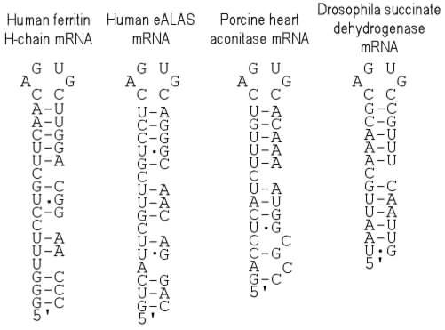
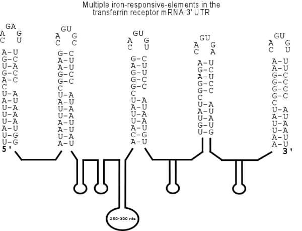

Information on Iron-responsive Element
This regulatory RNA element contains a specific binding site for the iron-regulatory protein (IRP, which was formerly called IRE-BP, IRF, FRP or p90, and of which in the meantime two different versions, IRP1 and IRP2, have been identified). Reduced cellular iron levels increase binding of IRP to iron-responsive elements in mRNA. Binding switches off translation of the ferritin mRNA, but stabilizes the transferrin receptor transcript.
Iron-responsive elements (IREs) in the 5' UTR of several mRNAs bind the iron regulatory protein (IRP). The IRE-IRP complex blocks the recruitment of the 40S ribosomal subunit. Examples are IREs in the 5' UTR of human and murine ferritin H-chain mRNA, murine and human erythroid aminolevulinic acic synthase (eALAS) mRNA, porcine heart mitochondrial aconitase mRNA and Drosophila succinate dehydrogenase mRNA.

The 3' UTR of mammalian transferrin-receptor (TfR) mRNA contains a complex structure consisting of five iron-response elements (IREs) to which the IRE binding-protein (IRP) binds when cellular iron is limiting. This interaction at the 3' UTR prolongs the half-life of TfR mRNA by stabilizing the transcript against specific endo-nucleolytic cleavage.
